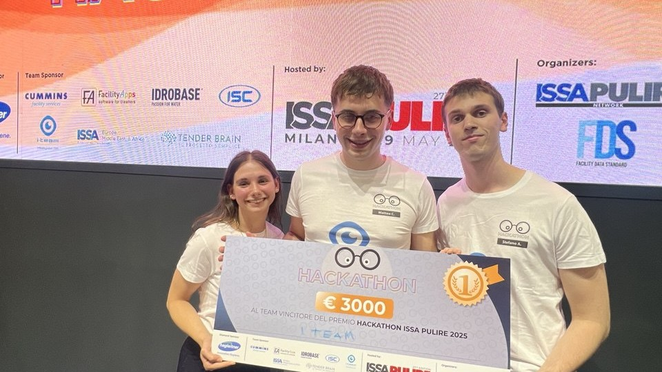

AI Hackathon Winner
Winner at the Milan 2025 ISSA Pulire hackathon for designing an AI solution focused on industrial cleaning workflows.
industrial automation engineer
and i like Coding, Robotics & AI
MSc student in Industrial Automation Engineering at the University of Brescia and Double Degree in Mechatronic Systems at Sorbonne University (Paris). I like AI-driven robotics and automation systems that turn ideas into reliable prototypes.
Projects
Winner at the Milan 2025 ISSA Pulire hackathon for designing an AI solution focused on industrial cleaning workflows.

Navigation system for TurtleBot3 with ROS2 and Nav2, simulation made via Gazebo and RViz. Built for research and rehabilitation use cases in collaboration with Hospital Sant'Anna (KR), Italy.
Open repoImitation learning in Atari Gymnasium with human-in-the-loop, experimenting with different architectures NN, CNN, ViT, and GAIL as additional technique.
Open repoAI-native anti-portfolio that predicts professional impact. Placed 5th at the AI Works Challenge.
Open repoAbout
I am an industrial automation engineer with a passion for robotics and artificial intelligence. I enjoy learning about different approaches to control systems and modeling real world.
Throughout my studies i learned a lot about robotic control, machine learning, and the potential of LLMs for robotics. I am particularly in how AI can change the way of designing and building robotic systems.
Education
Grade: Cum Laude.
Thesis: Machine Learning-based methods for MIMO
system identification.
Thesis: LLM-guided semantic understanding and imitation learning for robotic task adaptation.
Focus: Specialization in mechatronic systems for rehabilitation, robotics and AI.
Experience
Investigating how LLMs enable semantic abstraction and generalization of robotic tasks learned from demonstrations, bridging low-level multimodal data and high-level task representations.
Built an online platform that generates LLM-based documentation from UML diagrams for a metrics-driven technology company.
Skills
Activities
Involved in technical initiatives and professional development activities.
Built a functional AI-based system for large-scale facility simulation in a 7-hour challenge.
Ranked among the top 500 teams worldwide out of 7,000+ teams, with four consecutive years of participation.
Contact
Have a project, a research idea, or just want to connect? I’m happy to chat.